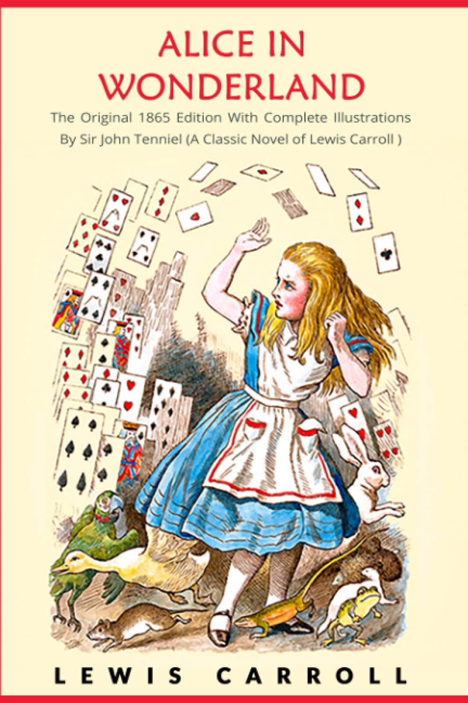
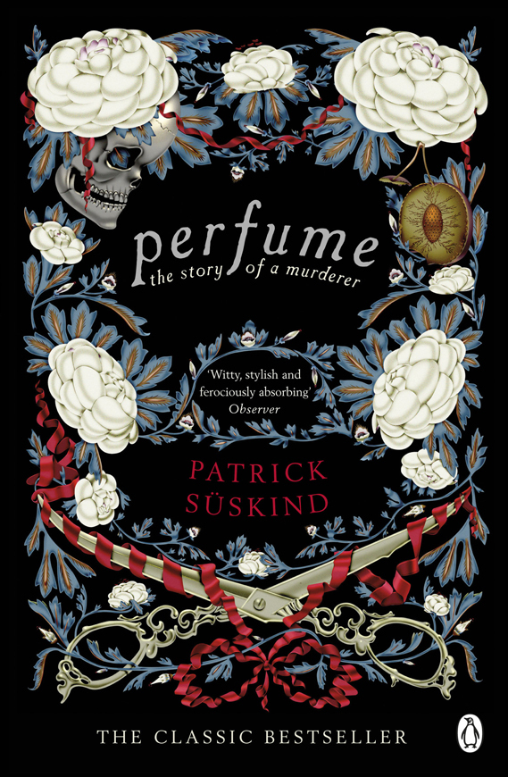
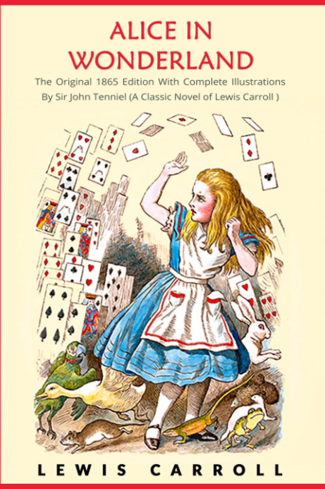
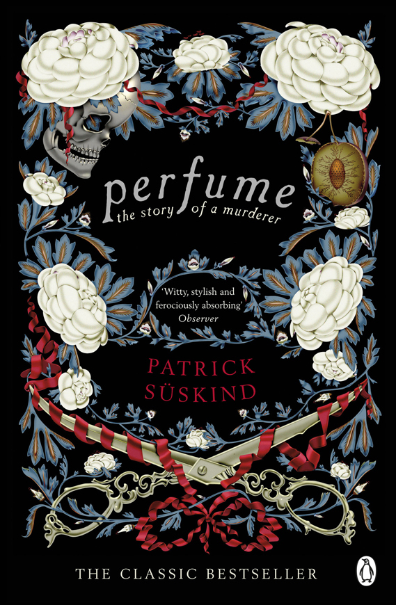
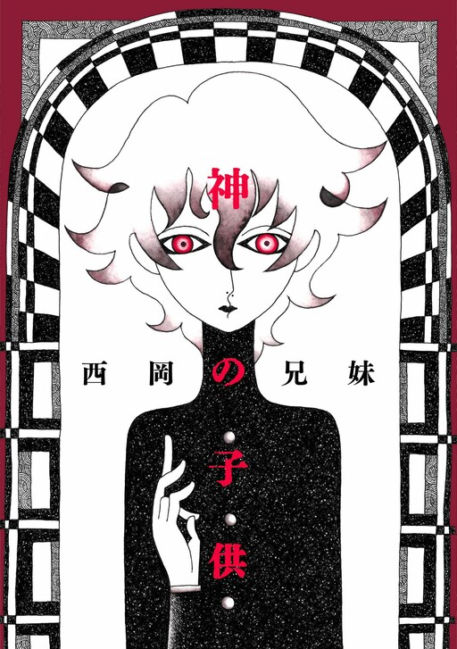
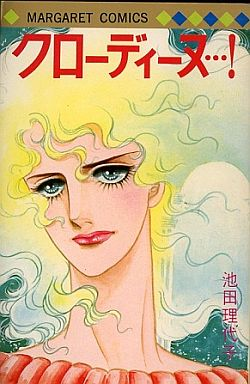
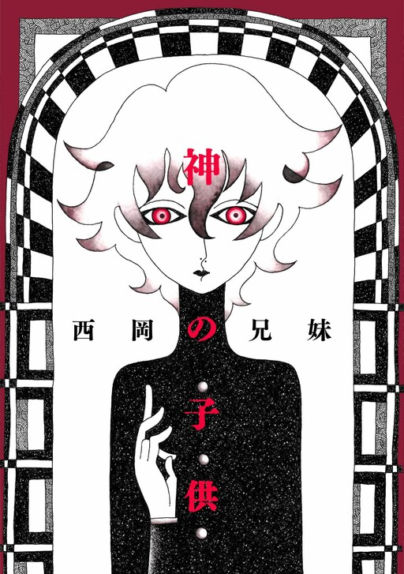
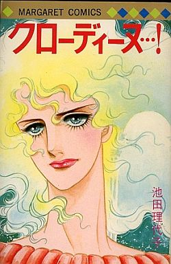
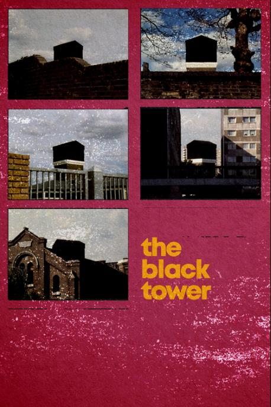
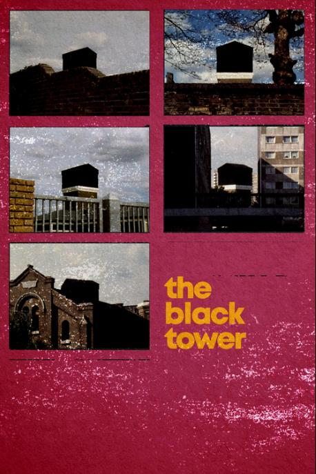

Goodreads - Letterboxd - AniList - Listenbrainz1
Currently Reading:
- Bernando Zannoni - My Stupid Intentions
- Jean Paul Sartre - Nausea
- William S. Burroughs - Naked Lunch
On Hold:
- Uketsu - Strange Pictures
- Oscar Wilde - The Picture of Dorian Gray
- Yevgeny Zamyatin - We
- Fyodor Dostoevsky - Notes From Underground
Recently Finished:
- Lewis Carroll - Alice's Adventures in Wonderland
- Uketsu - Strange Houses
- Sarah Kane - 4.48 Psychosis
- Urs Allemann - Babyfucker
1Maybe I should add music... After all, music is my favourite thing in the world.
2Some favourites are ancient and could use a refresh. I shall see if they still hold the same impact.
Favourite books2


 





 



Favourite films


 
